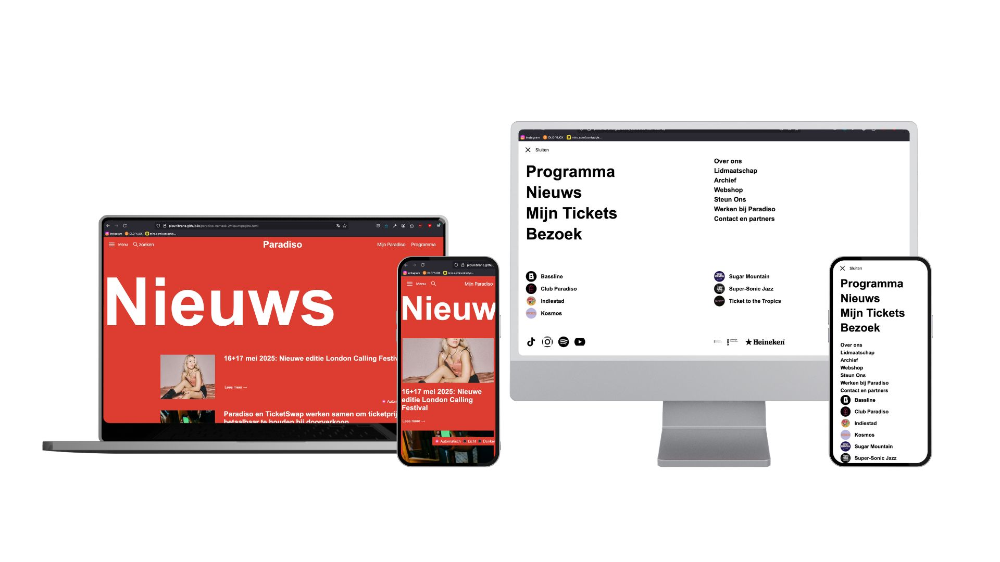
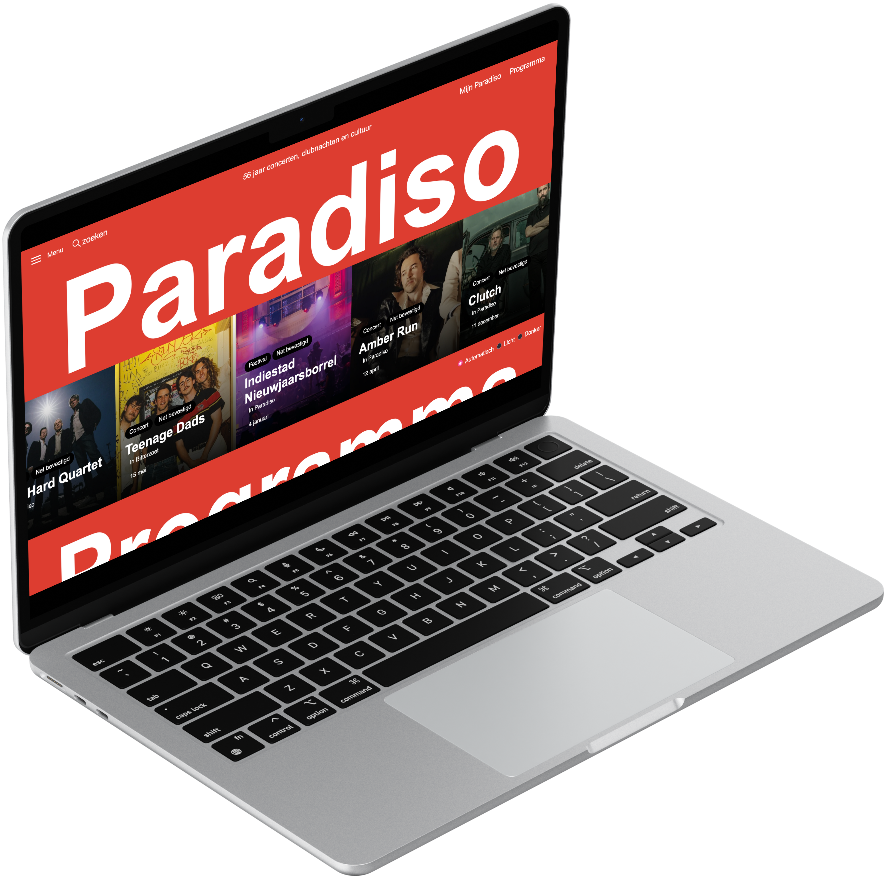

Voor deze opdracht heb ik twee pagina's van de Paradiso-website nagebouwd met Vanilla HTML, CSS en JavaScript. Het project richtte zich op het schrijven van semantische code, toegankelijkheid en responsiviteit, met een sterke focus op een professionele vormgeving.
Dit project heeft me geholpen om mijn vaardigheden in front-end webdevelopment en UX/UI-design verder te ontwikkelen.


